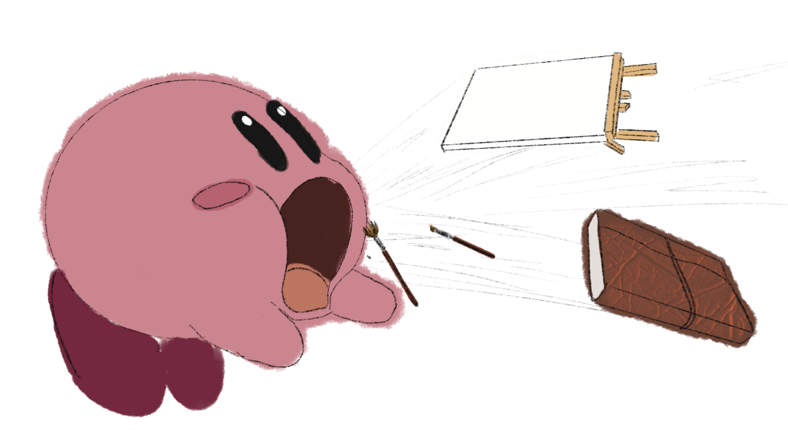
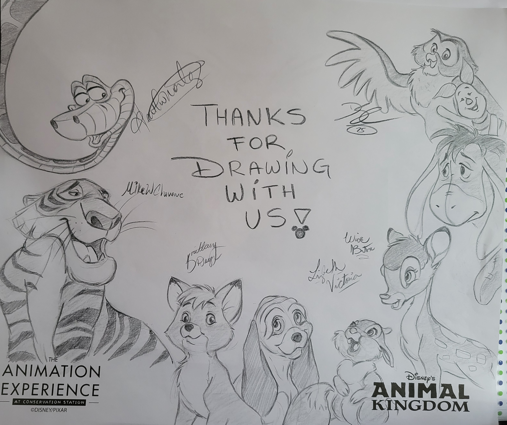

Hello!
Welcome to Purposeful Projects! My name is Maxie and I have created this website that is meant to get you to be crafty again! Here, you'll find some quick and easy crafts that can be made as enjoyable gifts or additions to your home. I am half-Japanese and have drawn a lot of inspiration from the culture and imported that into projects featured on the site. Each craft includes information about time, materials, and estimated cost!
Hopefully you'll find something you like and try something new this week!
Happy Crafting!

More Resources!
Here is a website that I have checked out before if you are interested in trying new crafts. Their website is called Craft Club. They have a lot of different and new crafts you can make for items around the house. Some such as pillow cushions, bags, cross stitching, and more! They sell each item as a starter pack with all of the resources that you need alongside the step by step directions.
They currently have a sale going on for up to 70% off! Go check them out!
This is a monthly subscription to try a brand new craft! Each month, they send out a brand new craft that has not been listed on the website before! This is a great way to try new things while keeping it close to your budget and working with your time! Some examples of previous crafts have been, wax stamps, flower press kits, wood burned cutting boards, and more!
A fun thing to do with your friends or family! They provide a free step by step guide in drawing your favorite Disney characters. I recently had an internship where I worked at Walt Disney World and this easily became one of my favorite things. I would go to the classes in Animal Kingdom and learn from the artists there where they would share fun stories of the characters, and since I have left Disney, I have found that there are online tutorials with some of the same aspects. On Disney+, there is a show called Sketchbook or, the YouTube edition, Disney Parks | How-To Draw Series. These offer a wide range of characters to draw from along with different scenes. You learn from talented artists such as the artist who created the character, Disney Imagineers, to Disney Cast Members who I learned from at my time in Disney.
